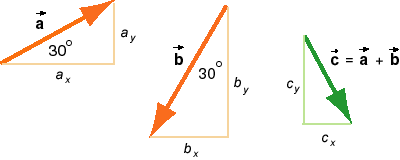

and
and  and the resultant displacement
and the resultant displacement  = + with
their scalar components.
= + with
their scalar components.

Yes, the magnitude of the siskin's total displacement is 6.01 m.
Solution. The diagram shows the two displacements
and and the resultant displacement = + with
their scalar components.
The magnitudes of the two displacements are
a = 10 m  and
and  b = 12 m.
b = 12 m.
The directions of the two vectors are indicated in the diagram above.
The scalar components of the two vectors, where q is the angle between the vector and the positive x-axis, are equal to
ax = a cos q = 10 cos 30o = 8.66 m,
ay = a sin q = 10 sin 30o = 5.00 m,
and
bx = a cos q = 10 cos 240o = -6.00 m,
ay = a sin q = 10 sin 240o = -10.39 m.
Adding the x-components and the y-components
separately gives the components of the resultant vector as
cx = ax + bx = 8.66 - 6.00 = 2.66 m,
cy = ay + by = 5.00 - 10.39 = -5.39 m.
Since the two components form a right-angle triangle of which the hypotenuse is equal to c, the Pythagorean theorem gives for the magnitude c of the resultant the value
c =  (cx2 +
cy2) = (2.662 + 5.392) = 6.01 m .
(cx2 +
cy2) = (2.662 + 5.392) = 6.01 m .
If you want to see how one can calculate the magnitude of the resultant of two vectors working only with magnitudes and angles and not using components, go to Vectors/Addition/Explain It/Add'n Quantitative. There is also an applet there that lets you practise vector addition for arbitrary vectors of your choice.